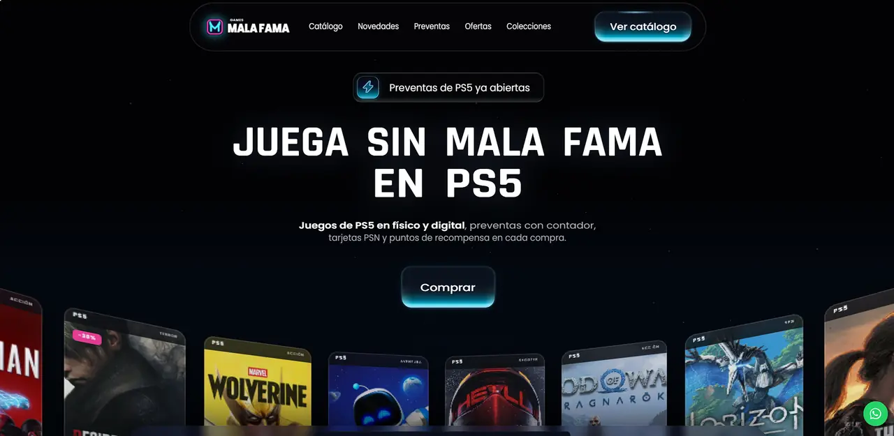

Mala Fama Games
Tienda en línea de juegos de PS5 en físico y digital. Resuelve la venta completa: catálogo con filtros, preventas con contador, carrito, pagos simulados, puntos de recompensa y un panel para administrar inventario, pedidos e informes.
- PHP
- MySQL
- JavaScript
- API REST
- GSAP
- Git